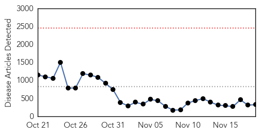
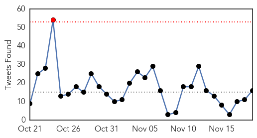
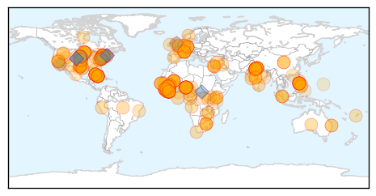
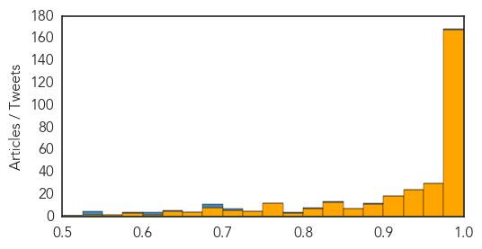

Toggle navigation
Early Warning
Daily Alerts
Ebola
Nov 19, 2014
Compare to:
-
Dengue Fever
Hemmorhagic Fever
Mold/Fungal Infection
Influenza
Meningitis
Pertussis / Whooping Cough
Middle East Respiratory Syndrome
Cholera
Hepatitis
Chikungunya
Yellow Fever
Bubonic Plague
West Nile Virus
Swine Flu
Measles
Unknown
Mumps
30 Day Trends
Web: 0
alerts
, 0
warnings
Twitter: 5
alerts
, 0
warnings
Top Articles:
Showing top 50 articles...
1.000
Seventh Sierra Leone doctor killed by Ebola
1.000
India quarantines Ebola patient from Liberia who has traces of virus
1.000
Gates Foundation pledges $5.7 million for Ebola research
1.000
Ebola spreading intensely in Sierra Leone as toll rises
1.000
Ebola: WHO says death toll now 5,420
1.000
Ebola: should we consider influenza vaccination?
1.000
Read Health News & Articles at TheHealthSite.com
1.000
Ebola in India: 24 other airports arranged with Ebola screening similar to Delhi
1.000
Passenger from Liberia Quarantined at Delhi Airport After Semen Tests Positive
1.000
Ebola death toll stands at 5,420
1.000
Flu, not Ebola, cause for concern
1.000
Malaysia General Business Sports and Lifestyle News
1.000
Ebola Survivor is Under Quarantine at Delhi Airport
1.000
U.S. could learn from Liberia
1.000
Seventh Sierra Leone doctor killed by Ebola, senior health worker says
1.000
Ebola death toll rises to 5,420 across eight countries: WHO
1.000
First Cuban doctor tests positive for Ebola in Sierra Leone
1.000
WHO reports intense Ebola activity in large part of Sierra Leone
1.000
Ebola death toll rises to 5,420
1.000
Preparing NZ for Ebola
1.000
India quarantines Ebola survivor over virus traces in semen samples — RT News
1.000
Ebola Update: Vaccines in Tests, Spike in Mali, Dips in Liberia
1.000
iafrica.com Man quarantined for Ebola in semen
1.000
Ebola death toll rises to 5,420
1.000
India man quarantined over Ebola; Cuban doctor catches virus in Liberia
1.000
Seventh Sierra Leone doctor killed by Ebola: source
0.999
Mali Nurse Endures Neighbors’ Stoning to Battle Ebola
0.999
Ministry wants embargo on travel from Ebola-hit countries
0.999
First case of Ebola detected..., SahilOnline News
0.999
Woman monitored for Ebola dies in Brooklyn hair salon
0.999
Man Recovering From Ebola Quarantined in Delhi, Minister Reviews Preparedness
0.999
Cuban Doctor Contracts Ebola in Sierra Leone, to Be Moved to Geneva
0.999
Obama Says Ebola Still a Threat, Asks Congress to Approve Funding
0.999
How Good Samaritan Hospital Prepares for Ebola
0.999
Cuba Announces That Cuban Doctor Has Contracted Ebola in Sierra Leone
0.999
Cuban doctor contracts Ebola in Sierra Leone, to be moved to Geneva
0.999
Mali places hundreds under watch in bid to stem Ebola
0.999
If all airports are as efficient as Delhi, we may keep Ebola out of India
0.999
Woman monitored for Ebola dies in Brooklyn hair salon
0.999
Ebola: it’s governance, stupid
0.999
Indian cured of Ebola kept in quarantine
0.999
'Homeopathy CAN cure Ebola but WHO officials are stopping us'
0.999
Indian Man Quarantined After Authorities Find Ebola Virus in Semen
0.999
To save Ebola patients, high-tech care may not be the most important weapon
0.999
Ebola survivor quarantined after semen tests positive for virus
0.999
DNA test, US validation confirmed Ebola
0.999
The Advocate — Baton Rouge, Louisiana
0.999
Northern Voices Online Ebola scare in India
0.999
Efforts by UN health agency under way to step up Ebola response in Mali
0.998
Cuban doctor infected with Ebola in Sierra Leone
Top Tweets:
0.977
Health care workers in Ebola-affected countries are performing life-saving tasks to prevent the spread of the virus
0.946
Ebola Update: Woman who died in New York tests negative for Ebola. Read more here http://t.co/MOmAdTspTD
0.914
Pluviométrie atypique, conflits et Ebola augmentent l’insécurité alimentaire en Afrique de l’Ouest fewsnet http://t.co/8kvnsmI2Qi
0.900
RT: Guess where Ebola spread fastest? No access to piped water supply: Guinea 17%, Sierra Leone 75%, Liberia 89%. http://t.co/Mr…
0.888
Message from Tiken Jah Fakoly to Liberia and Sierra Leone about Ebola virus AfricaStopEbola... http://t.co/mc9sPngqj0
0.885
The economic and social impact of Ebola virus disease in Sierra Leone - assessment http://t.co/gUVulijk9c
0.881
Cuban MD has contracted Ebola in Sierra Leone, BBC says. Going to Geneva for care. Wonder if he'll get post-exposure VSV vaccine or ZMab?
0.837
Liberia. Dangerous Deliveries: Ebola Devastates Women's Health In Liberia: http://t.co/EgoYYDeR7f
0.828
RT: @jyangstar Live Webcast of ICAV 11th Symposium AfricaDay on infectious disease & Ebola. Watch at http://…
0.828
African artists unite to fight Ebola! Buy on iTunes. EndEbolaNow ebola WeCanFightThis http://t.co/UMqlVJp16F
0.826
RT: Ebola spreading intensely in Sierra Leone as toll rises: WHO http://t.co/wkKUclK07D
0.794
Ebola in health-care workers: @WHO says 584 are known to have been infected, 329 have died. http://t.co/pt0ffHATkv
0.783
RT: For perspective, Sierra Leone had roughly 100 doctors for 6 million people before Ebola took 6 directly.
0.761
Ebola is a major obstacle in the malaria fight as it leaves health systems exhausted. Take a moment to fight Ebola. http://t.co/2SRO2azYey
0.743
Ebola virus in the semen of convalescent men http://t.co/Mh91mJoXM1
0.724
Ebola virus transmission via contact and aerosol — a new paradigm http://t.co/OybXMK2KtV
0.705
RT: Cuban doctor treating Ebola patients in Sierra Leone contracts the disease http://t.co/2zM5MklHhU http://t.co/DITfsOAzNZ
0.696
RT: Sierra Leone video diary: Ebola is "like no disease I've seen", says doctor http://t.co/mXTpq3dChU
0.695
.@ohheyadanielle The assumption is Ebola s are underreported. The CDC estimates 2.5 cases for every observed case. WHO is using 2.
0.684
RT: Returning British Ebola nurse is frustrated at Sierra Leone situation http://t.co/E3GJzERubr
0.684
RT: Returning British Ebola nurse is frustrated at Sierra Leone situation http://t.co/E3GJzERubr
0.662
Latest Ebola numbers from: 15 145 cases, with 5420 reported deaths. http://t.co/foF3hxTryb
0.626
RT: The colonial breakdown of ebola involvement is fascinating. US has "fixed" Liberia. We hear little from Sierra Leone, nothing…
0.620
thnx. info promo all in aid of Ebola fundraising
0.619
Via: Guarding The Ebola Border http://t.co/5J4Eie8M5B
0.616
RT: Geographical distribution of Ebola cases in Guinea, Liberia, Mali and SierraLeone WHO SitRep 19 http://t.co/1u9Y0ilDVv
0.603
The Queen fears that malaria, which has killed more people, is not receiving enough attention due to Ebola http://t.co/HMW6RpeRzG
0.602
BBC News - Video diary from doctor treating Ebola in Sierra Leone http://t.co/C9ZqsVELvf
0.596
RT: SIERRALEONE: A Cuban doctor working in Sierra Leone has been diagnosed with Ebola in what is thought to be Cuba's fir…
0.533
Is Canada patent deal obstructing Ebola vaccine development? @thelancet ttp://sco.lt/...
0.528
Ever more Ebola cases in Sierra Leone, but perhaps they're not accelerating quite as fast? Too early to tell, but let's hope.
0.521
RT: How has the food supply been affected by the Ebola outbreak? http://t.co/mlf7kWyxlh http://t.co/hPf1tWpc13
0.515
RT: Ebola Test Is Negative on Woman Who Died in NYC (NYT Health, November 19 2014) http://t.co/b1wKLDuNRG
Web/News Articles

Tweets

Article Locations

Article Confidences
